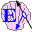

| |
Highlights of 0.8.31e |
||||||
Non-Upwards Compatible Changes
Non-Upwards Compatible Changes
"cap://..." URIs become httpsy-like "captp://..." URIs
This is in anticipation of switching to using TLS with the httpsy handshake protocol, and to using the Waterken Redirectory service. These will replace, respectively, the low-level TLS-like aspects of our VatTP protocol and the (not currently working) VLS (Vat Location Service).
i.toString64() no longer includes bogus leading zero
? 255.toString64() # value: "_m"
It used to answer '# value: "0Fy"'. Note that __makeInt.fromString64("...") doesn't need to be changed, since it's already compatible with either encoding:
? __makeInt.fromString64("_m") # value: 255 ? __makeInt.fromString64("0Fy") # value: 255
This is due to changing it from being based on i.toByteArray() to i.toBase2ByteArray() (see below).
New features
New "rune" shortcut for MSWindows users
When installing E on MSWindows, you should now get a third "rune" shortcut on your Desktop and in your "start" menu under "erights.org". Altogether, after E is installed, you should see the following 3 shortcuts in both places:
Launches |
||
|---|---|---|
| eBrowser | An editor with some features to help edit E code. | |
| capDesk | A capability-secure, virus-safe desktop, for running caplets -- applications written in E to run under capDesk. (The icon is the POLA-bear, representing the Principle of Least Authority.) | |
|  | rune | The E command-line interpreter, rune, running in its own MSWindows command window. Unlike the "rune" shell script, this should work on MSWindows even if you haven't installed Cygwin. |
eBrowser now recognizes "interface" rather than "class"
"interface" definitions are now picked up by the left-hand code-outline pane.
updoc now understands "resource:..." arguments
For those updoc scripts embedded in files on the CLASSPATH, you can now invoke them without extracting them into a separate file. If <ehome>/scripts is on your PATH (where <ehome> is the directory into which you installed E, typically "C:/Program File/erights.org" on MSWindows, and "/usr/local/e" on *nix systems), then you can say:
$ updoc.e resource:org/erights/e/examples/concurrency/makeQueue.emaker
In any case, from within E you can now say:
? rune([interp.getProps()["e.home"] + "/scripts/updoc.e", > "resource:org/erights/e/examples/concurrency/makeQueue.emaker"])
New edu.jhu.cs448 package subtree
A draft implementation of Christian Scheideler's "contact" or "sphere" abstractions for distributed p2p programming. This is not yet ready for use, but it's already an interesting read.
Improved crypto library taming
Simplified crypto signing lib
? def kp := <import:java.security.KeyPairGenerator>.makeKeyPair(entropy) # value: <a KeyPair> ? def sig := <elib:sealing.crypto.Signer>.sign(kp.getPrivate(), "foo") ? <elib:sealing.crypto.Verifier>.verify(kp.getPublic(), "foo", sig) # value: true ? <elib:sealing.crypto.Verifier>.verify(kp.getPublic(), "bar", sig) # value: false
Keys and KeyPairs are now PassByCopy
You can now pass these by value over the network.
i.toBase2ByteArray()
This works only for non-negative numbers, and so, unlike i.toByteArray(), uses a simple base-2 encoding rather than a two's complement encoding. This makes a difference only when the high bit of the i.toBaseToByteArray() encoding is 1:
? 255.toByteArray() # value: [0, -1] ? 255.toBase2ByteArray() # value: [-1] ? 256.toByteArray() # value: [1, 0] ? 256.toBase2ByteArray() # value: [1, 0]
i.toYURL32(), __makeInt.fromYURL32("...")
Supports conversion to and from the Waterken Enc "base32" encoding, for use in httpsy://... and captp://... YURL strings. (Like our own i.toString64() format, neither is actually a presentation of a number in base 32 or 64 respectively, because the padding's on the left instead of on the right. However, they do encode 5 or 6 bits of the number per character, respectively.)
i.cryptoHash() now allows negative numbers
It was already taking the SHA1 hash of the toByteArray() form of the integer (see above), which provides distinct representations for all integers, so why not? The cryptoHash() of any integer is always a non-negative integer.
PublicKey.getFingerprint()
The fingerprint of a public key, according to this method, is an SHA1 hash of the two's complement encoding of the public key. We probably should have used the base2 encoding, but we do it this way (for now?) for compatibility with our legacy VatTP handshake logic.
Bugs Closed |
Thanks to... | |
|---|---|---|
| Interactive launching not working on MSWindows XP SP2 | Keith Binder & Nigel Williams | |
| Solaris build missing "e.machdir" setting | Steve Rifkin | |
| Unnormalized windows3.1's "8.3" short filenames | bry at xdocs.dk | |
| timeMachine can't be persisted | Marc Stiegler | |
Bugs Partially Addressed |
||
| Small integers don't have all the operators | cs448 |
Unless stated otherwise, all text on this page which is either unattributed or by Mark S. Miller is hereby placed in the public domain.
| |
|
report bug (including invalid html)
|
||||||||